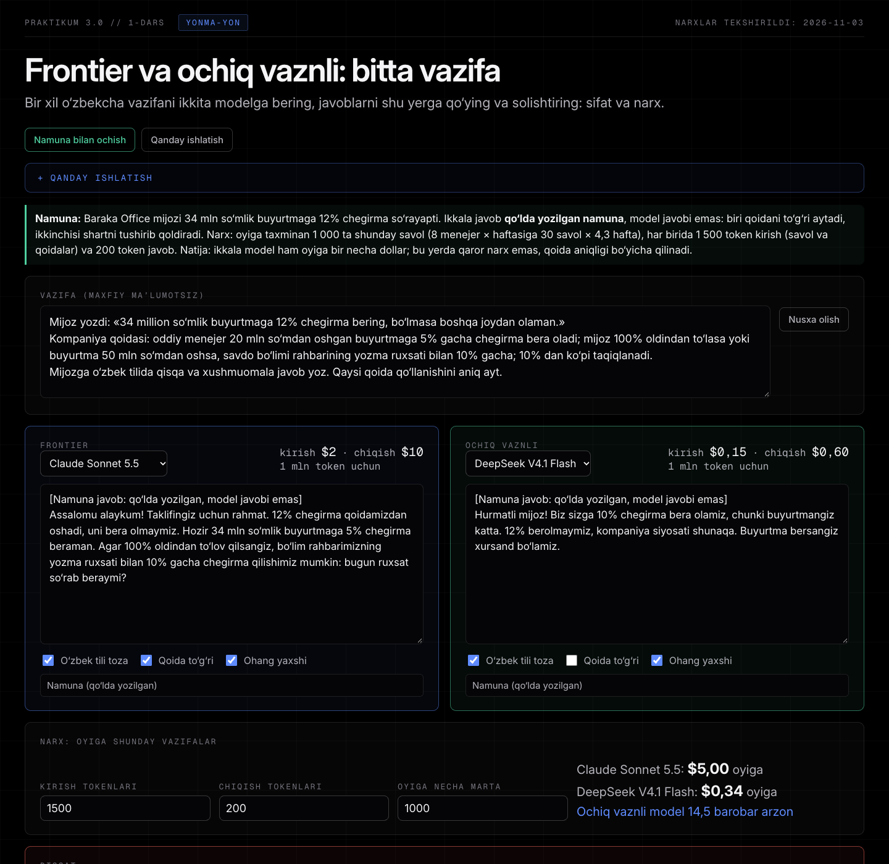

Frontier va ochiq vaznli: qanday ishlatish
Sahifa: index.html, internetsiz ochiladi; javoblarni olish uchun esa Claude va ochiq vaznli chat kerak.
Nima uchun
Bitta vazifani ikki xil modelga berib, javob sifatini va oylik narxni yonma-yon ko‘rasiz. Shundan har bir ish uchun «qaysi model va nega» degan qaror chiqadi.
Boshlashdan oldin kerak
- Maxfiy bo‘lmagan bitta biznes vazifasi: mijozga javob yoki qoida bo‘yicha savol.
- Kompaniya qoidasi matni (prays-list, chegirma tartibi, shartnoma bandi).
- Claude va bitta ochiq vaznli chat: chat.deepseek.com yoki chat.qwen.ai.
- Bu savol oyiga necha marta berilishi: To‘plam 1 dagi B shaklining B.2 ustuni (haftasiga) × 4,3.
Qadamlar
- «Vazifa» qutisiga savolni va qoidani yozing, «Nusxa olish»ni bosing.
- Uni Claude’ga va ochiq vaznli chatga yuboring.
- Ikkala javobni o‘z qutisiga qo‘ying va model nomini tanlang.
- Har javobga uchta belgi qo‘ying: til toza, qoida to‘g‘ri, ohang yaxshi.
- Pastda kirish va chiqish tokenlarini, oyiga necha marta ekanini yozing.
Har bir maydon nima
| Maydon | Nima | Qayerdan |
|---|---|---|
| Kirish tokenlari | Savol va unga qo‘shilgan qoidalar uzunligi | Tokenizator sahifasida o‘lchang |
| Chiqish tokenlari | Javob uzunligi | Javobni tokenizatorga qo‘ying |
| Oyiga necha marta | Shu savol oyiga necha marta beriladi | B shakli, B.2 × 4,3 |
| Narx | 1 million token uchun dollar | Sanasi yozilgan varaq (models-data.js) |
Namuna: Baraka Office
«Namuna bilan ochish» tugmasi Baraka Office mijozining 34 mln so‘mlik buyurtmaga 12% chegirma so‘rashini qo‘yadi. Ikkala javob qo‘lda yozilgan namuna, model javobi emas: usulni ko‘rsatish uchun.

- Chap javob qoidani to‘g‘ri aytadi: hozir 5%, 100% oldindan to‘lovda rahbar ruxsati bilan 10%.
- O‘ng javob «10% bera olamiz» deydi, lekin shartni (rahbar ruxsati va 100% to‘lov) tushirib qoldiradi: «Qoida to‘g‘ri» belgisi qo‘yilmagan.
- Narx: oyiga taxminan 1 000 savol (8 menejer × haftasiga 30 savol × 4,3 hafta), 1 500 token kirish, 200 token javob. Claude Sonnet 5.5: oyiga 5,00 dollar; DeepSeek V4.1 Flash: 0,34 dollar; farq 14,5 barobar.
Qanday o‘qish: ikkala narx ham kichik, shuning uchun qarorni javob aniqligi hal qiladi. Qoidani noto‘g‘ri aytadigan model bitta noto‘g‘ri chegirma bilan oylik farqdan ko‘p zarar keltiradi.
Ko‘p uchraydigan xatolar
- Mijoz ma’lumotini DeepSeek saytiga yozish: u ma’lumotni Xitoyda saqlaydi.
- Faqat narxga qarab tanlash.
- Har xil vazifani solishtirish: ikkala modelga aynan bir xil matn bering.
Tayyor
Har bir vazifa uchun bir gap yoza olasiz: «Bu ishga [model], chunki [sifat yoki narx sababi]».
Praktikum 3.0 · 1-dars · 21-noyabr (shanba) / 22-noyabr (yakshanba) 2026 · manba: day-1/demos/side-by-side/side-by-side.qollanma.md